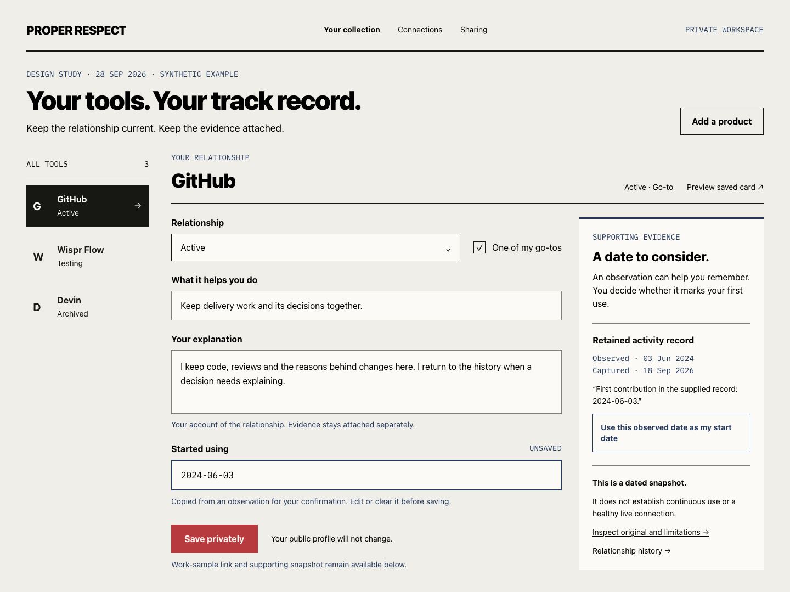
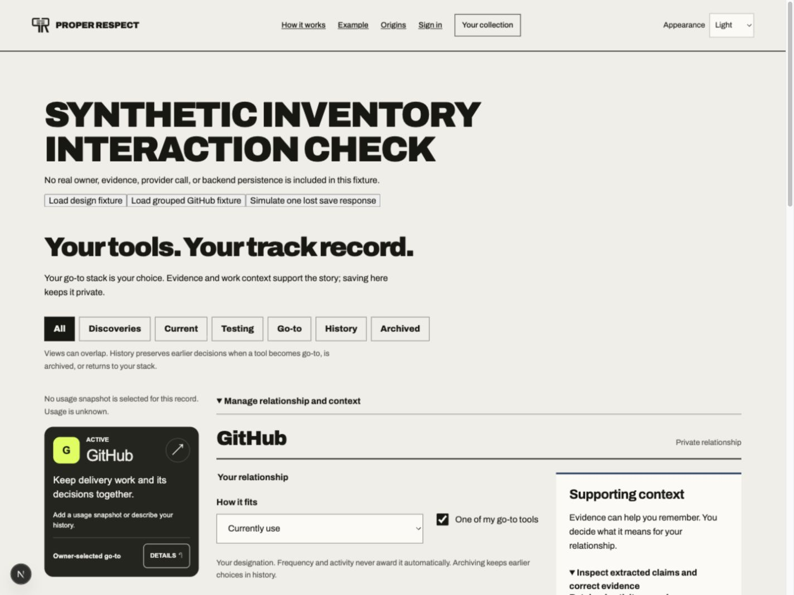
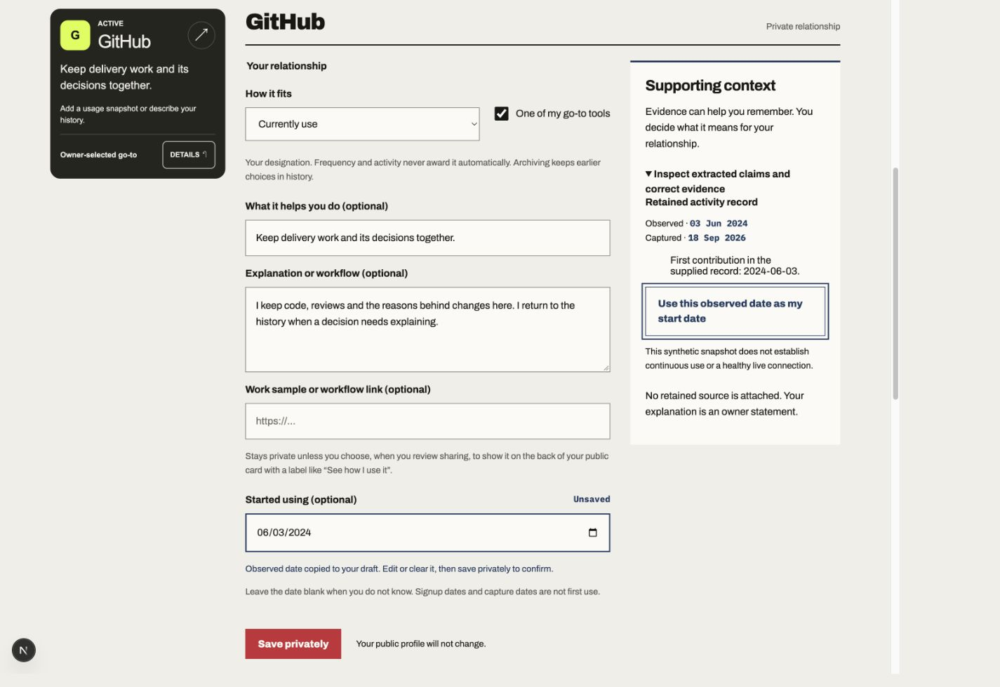
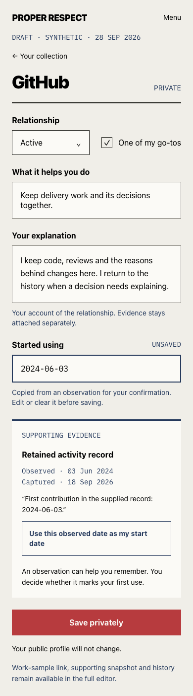
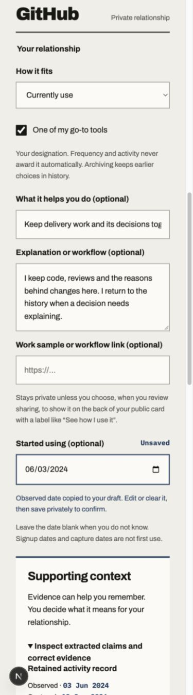
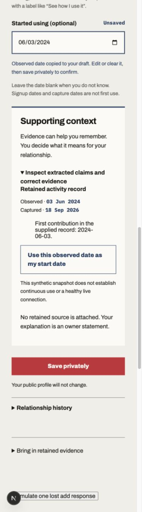
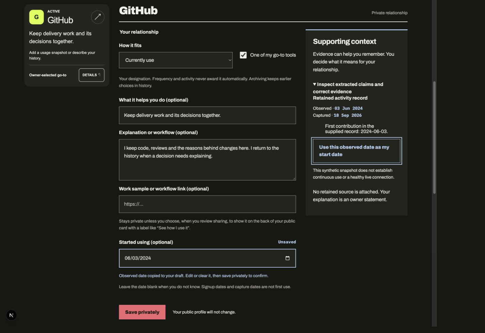
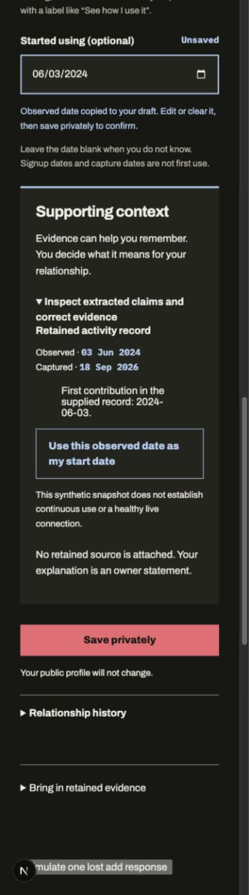
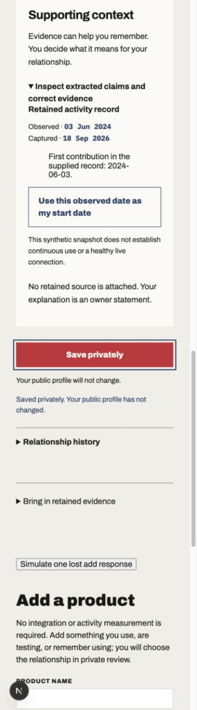

Paper source and live synthetic browser state: GitHub, active, go-to, observed date 2024-06-03 copied but not saved. No provider data.
Source: Paper 1440 × 1079 and 390 × 1401. Browser CSS viewports match those sizes. Native JPEG outputs are uniformly normalized to CSS width here. Complete editor coverage uses separate intact viewport frames, with overlap; no stitched image is presented. Fixture scaffolding, existing card browser/navigation and complete controls account for the longer live page. See design-qa.md for each classified difference.







Keyboard ArrowUp changed June 3 to July 3; no save occurred until Enter on Save privately. Evidence stayed expanded.
